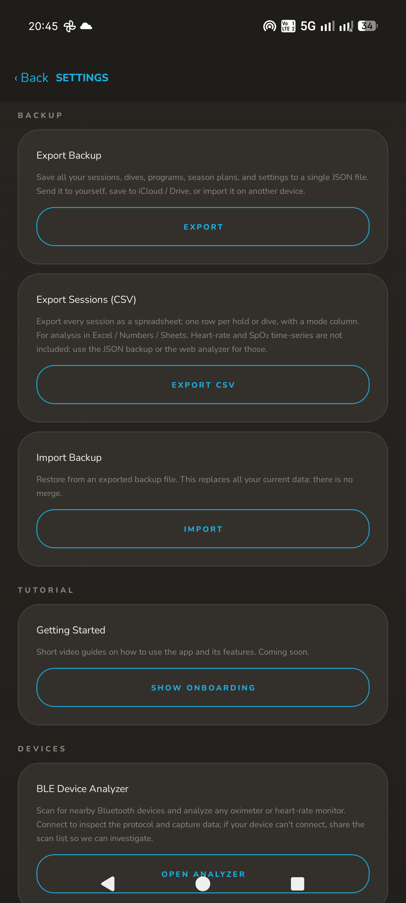
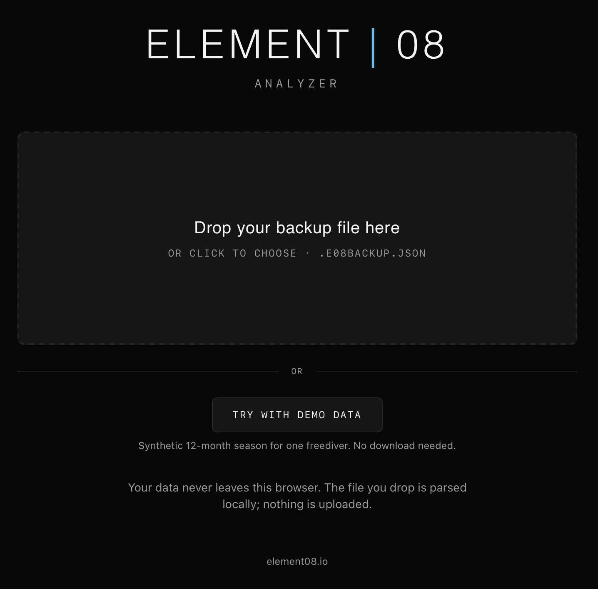
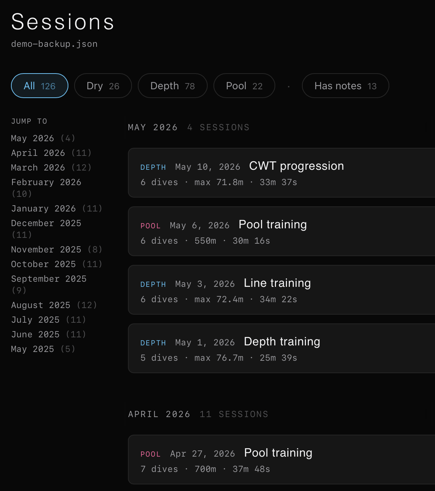
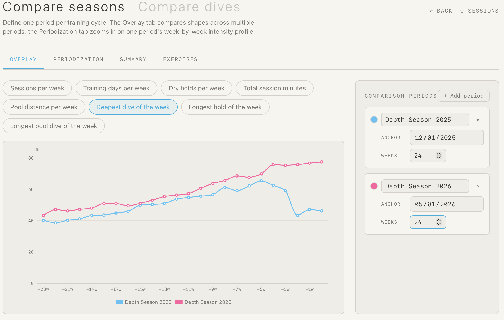
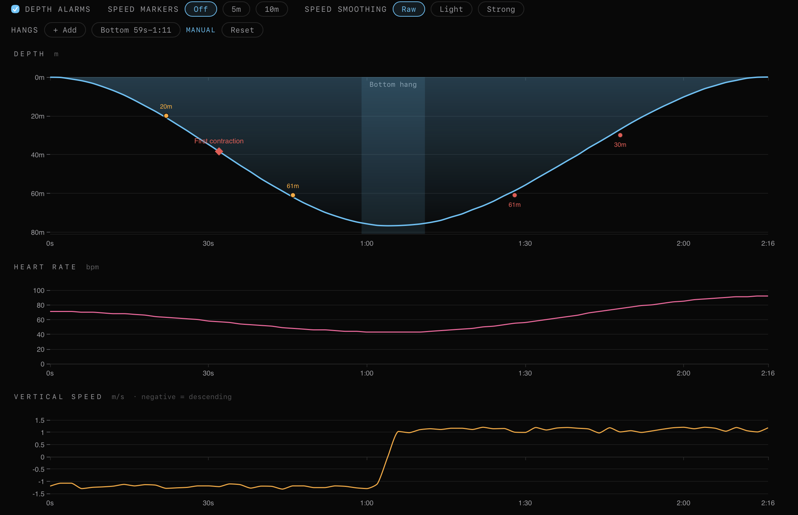

ANALYZER
Web companion · runs in your browser



Overlay this season against last. Sessions per week, deepest dive, longest hold. Easy long-term analysis.

Tap any dive to see the depth curve, heart rate, vertical speed, and your logged markers: mouthfill, first contraction, alarms.

Nothing is uploaded. The file you drop is parsed locally. Try it now with built-in demo data, no backup needed.
Free · No signup · Demo included